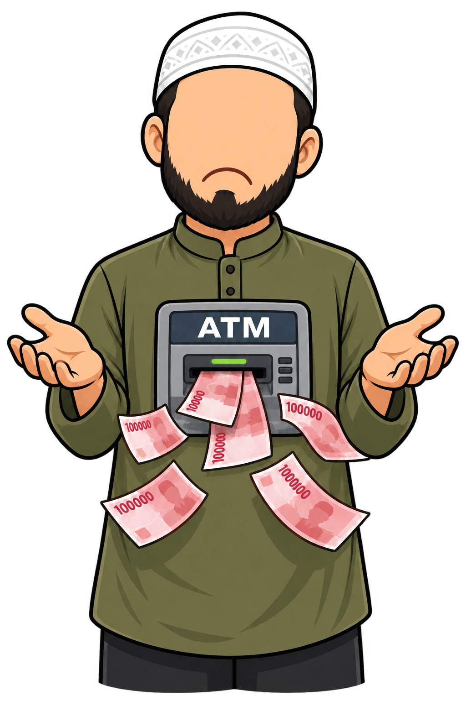
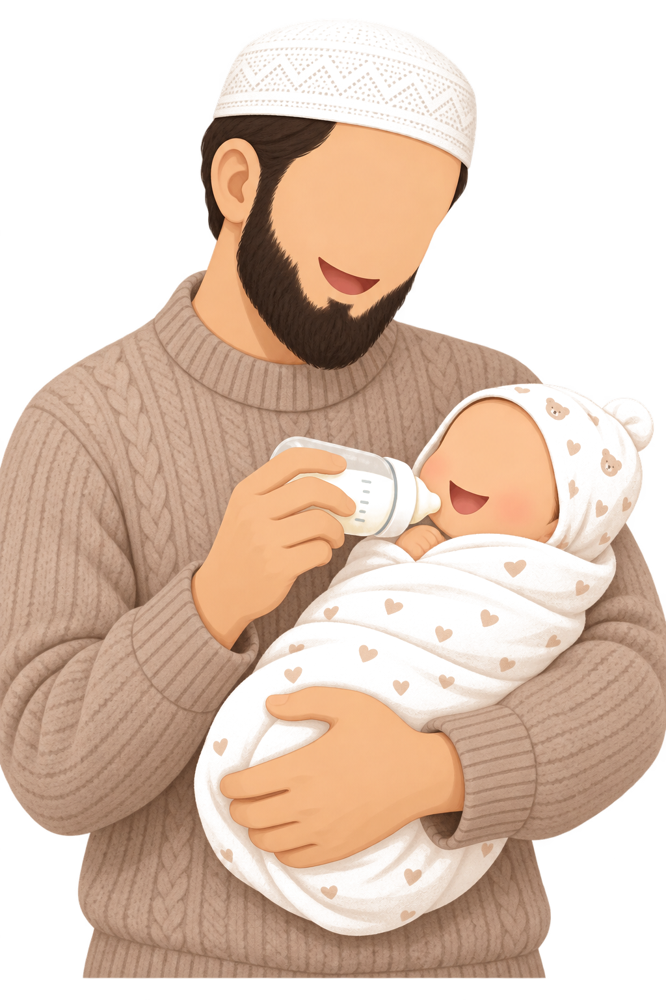
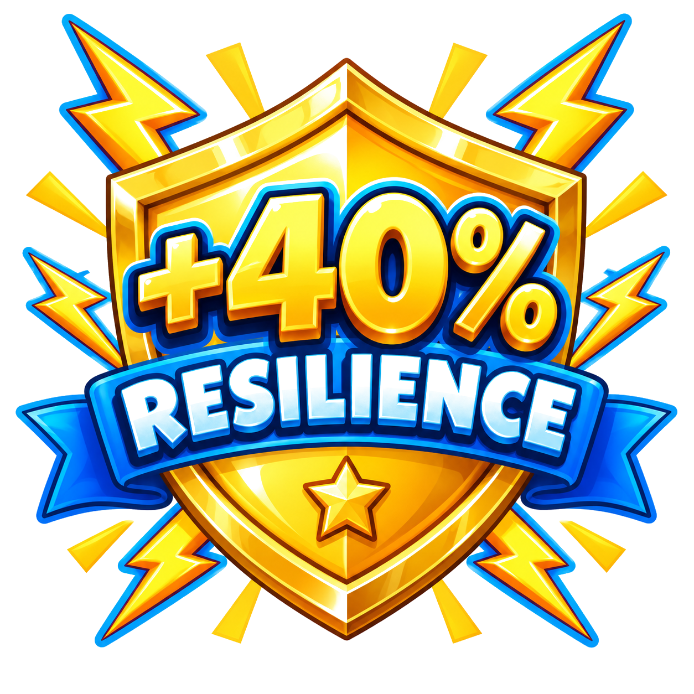

PARADIGM INQUIRY // THE FINANCIAL ILLUSION
ATM DAD

COMMON TRAP: HUMAN ATM
ABSENT FATHER RISK: +80% ANXIETY
Financial transfer cannot replace emotional presence
EMOTIONAL DYSREGULATION RISK
+80%
HARVARD DATA
CRITICAL PARENTING FLAW
Fatherhood does not end when money is transferred: that is a dangerous illusion.
NEUROSCIENCE // YALE CHILD STUDY CENTER
YALE

PREFRONTAL CORTEX: EMPATHY CIRCUITS
OXYTOCIN PEAK: MATCHES NEW MOTHERS
A father's brain physically rewires when actively caring for his child
PATERNAL NEUROBIOLOGY
When fathers bathe and carry their kids: empathy circuits ignite instantly.
DEVELOPMENTAL PSYCHOLOGY // HARVARD CENTER
RESILIENCE

NEURAL TRAINING: IMPULSE CONTROL
STRESS RESILIENCE: +40% HIGHER
DEVELOPMENTAL PSYCHOLOGY
Physical play with dad: hardwires emotional control and stress resilience.
PROPHETIC ETHICS // AR-RA'I & MERCY
AR-RA'I
مَنْ لا يَرْحَمُ لا يُرْحَمُ
"Whoever does not show mercy, will not be shown mercy."
The Prophet ﷺ carried his grandchildren during communal prayer—shattering toxic customs that viewed fatherly affection as weakness.
CONCEPT OF AR-RA'I: SHEPHERD OF SOULS
SURAH LUQMAN: HEART-TO-HEART DIALOGUE
PROPHETIC WISDOM
In Islamic tradition, a father is Ar-Ra'i: a shepherd of hearts and emotions.
FINAL VERDICT // THE LIFETIME RECORD
PRESENCE
BE TRULY PRESENT
GENUINE PRESENCE OUTWEIGHS OVERTIME BANK STATEMENTS
Your child won't recall your bank balance—their nervous system remembers your warm hand
THE FATHER'S LEGACY
What your child remembers forever: your presence when they were afraid.